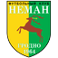

FC Isloch Minsk R. vs Torpedo Zhodino: result and our prediction
FC Isloch Minsk R. got the better of Torpedo Zhodino, 4-3 in the Premier League. FC Isloch Minsk R.: Ivan Tikhomirov 30', Evgeni Yudchits 39', Ivan Tikhomirov 73', Aleksandr Butko 87'. Torpedo Zhodino: Aleksandr Frantsuzov 9', Kirill Premudrov 71', Aleksandr Frantsuzov 80'. Ivan Tikhomirov was sent off for FC Isloch Minsk R. on 84'.
In the table, FC Isloch Minsk R. move up to 2nd, 1 point off the top; Torpedo Zhodino stay 8th. ML Vitebsk lead on 65 points, 1 ahead of FC Isloch Minsk R.. By our season odds, FC Isloch Minsk R.'s chance to win the league fell from 19% to 12%; FC Isloch Minsk R.'s chance to qualify for the Champions League qualifying fell from 100% to 12%.
Shots on target: 9 to 6.
In our world ranking, FC Isloch Minsk R. gain 6.0 rating points and climb from #638 to #616 in the world; Torpedo Zhodino lose 6.0 rating points and slip from #1,700 to #1,751 in the world.
I had FC Isloch Minsk R. at 58% before kick-off.
FC Isloch Minsk R. host Torpedo Zhodino in the Premier League (round 29) on Sunday 22 November 2026. FC Isloch Minsk R. are #616 in our world ranking and have won all of their last 5; Torpedo Zhodino are #1,750 and have won 2 and lost 3 of their last 5. On paper that's a big gap - 1,134 places - in FC Isloch Minsk R.'s favour.
Our prediction
Our model makes FC Isloch Minsk R. the favourites at 58%, with a draw at 23% and Torpedo Zhodino at 18%.
Rating: 1057
Chance to win: 58%
Last 5: WWWWW
Rating: 845
Chance to win: 18%
Last 5: LLWLW
Who will win FC Isloch Minsk R. vs Torpedo Zhodino?
FC Isloch Minsk R. are #616 and Torpedo Zhodino #1750 in our world ranking of every senior club. Based on the two clubs' ratings and home advantage, the most likely result is FC Isloch Minsk R. (58%). More from the Premier League.
Head to head
| Date | Match | Score |
|---|---|---|
| 2026-11-22 | FC Isloch Minsk R. v Torpedo Zhodino | 4-3 |
| 2026-07-05 | Torpedo Zhodino v FC Isloch Minsk R. | 0-2 |
| 2025-11-23 | Torpedo Zhodino v FC Isloch Minsk R. | 0-0 |
| 2025-06-28 | FC Isloch Minsk R. v Torpedo Zhodino | 1-3 |
| 2024-11-10 | FC Isloch Minsk R. v Torpedo Zhodino | 0-1 |
Premier League table
| # | Club | P | Pts | World |
|---|---|---|---|---|
| 1 | ML Vitebsk | 29 | 65 | #525 |
| 2 | FC Isloch Minsk R. | 29 | 64 | #616 |
| 3 | Dinamo Minsk | 29 | 64 | #533 |
| 4 | Dinamo Brest | 29 | 54 | #954 |
| 5 | Neman | 29 | 52 | #986 |
| 6 | FC Gomel | 29 | 46 | #1408 |
| 7 | FC Vitebsk | 29 | 40 | #1772 |
| 8 | Torpedo Zhodino | 29 | 36 | #1750 |
| 9 | FC Minsk | 29 | 35 | #2070 |
| 10 | Slavia Mozyr | 29 | 34 | #1566 |
How this is worked out
Every senior result from every country feeds one Elo rating system, so every club in the world sits on the same scale. Before each match the two ratings, adjusted for home advantage, give the chances of a home win, a draw and an away win. See the full world ranking and every match today.
| # | Club | P | W | D | L | GD | Pts |
|---|---|---|---|---|---|---|---|
| 1 | ML Vitebsk | 29 | 19 | 8 | 2 | 43 | 65 |
| 2 | FC Isloch Minsk R. | 29 | 19 | 7 | 3 | 32 | 64 |
| 3 |  Dinamo Minsk Dinamo Minsk | 29 | 20 | 4 | 5 | 32 | 64 |
| 4 | Dinamo Brest | 29 | 16 | 6 | 7 | 24 | 54 |
| 5 |  Neman | 29 | 16 | 4 | 9 | 10 | 52 |
| 6 |  FC Gomel FC Gomel | 29 | 13 | 7 | 9 | 13 | 46 |
| 7 |  FC Vitebsk FC Vitebsk | 29 | 11 | 7 | 11 | 1 | 40 |
| 8 | Torpedo Zhodino | 29 | 10 | 6 | 13 | -2 | 36 |
| 9 |  FC Minsk FC Minsk | 29 | 10 | 5 | 14 | -11 | 35 |
| 10 |  Slavia Mozyr Slavia Mozyr | 29 | 9 | 7 | 13 | -3 | 34 |
| 11 |  Baranovichi Baranovichi | 29 | 8 | 7 | 14 | -16 | 31 |
| 12 |  Belshina Belshina | 29 | 7 | 6 | 16 | -22 | 27 |
| 13 |  Arsenal Arsenal | 29 | 6 | 9 | 14 | -22 | 27 |
| 14 |  FC Dnepr Mogilev FC Dnepr Mogilev | 29 | 5 | 11 | 13 | -14 | 26 |
| 15 |  Bate Borisov Bate Borisov | 29 | 5 | 9 | 15 | -16 | 24 |
| 16 |  Naftan Naftan | 29 | 4 | 5 | 20 | -49 | 17 |